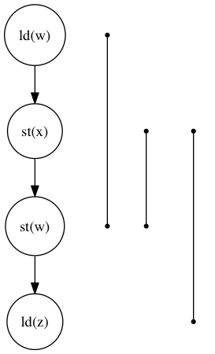
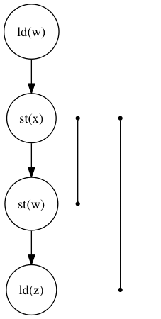

Declarative Fence Insertion
johnbender@cs.ucla.edu
mutex
The Art of Multiprocessor Programming, 2.3.1
class LockOne implements Lock { private boolean[] flag = new boolean[2]; public void lock() { int i = ThreadID.get(); int j = i-1; flag[i] = true; while (flag[j]) {} } public void unlock() { int i = ThreadID.get(); flag[i] = false; } }
mutual exclusion proof
The Art of Multiprocessor Programming, 2.3.1
class LockOne implements Lock { private boolean[] flag = new boolean[2]; public void lock() { int i = ThreadID.get(); int j = i-1; ▶ flag[i] = true; ▶ while (flag[j]) {} } public void unlock() { int i = ThreadID.get(); flag[i] = false; } }
Bad execution
| Thread 0 | Thread 1 | |
|---|---|---|
flag[0] = true |
buffered | |
flag[1] : false |
||
flag[1] = true |
||
flag[0] : false |
bad! | |
| enter cs | ||
| enter cs | bad! |
Possible under Java, x86, ARM, and Power
ensuring correctness
- sequential consistency
volatilemodifier- memory fences
Pragma 2.3.1. In practice, the Boolean flag variables … must all be declared
volatileto work properly.
execution order
The requirement that two instructions be seen to execute in the order they appear in the program.
algorithms: code and orders
class LockOne implements Lock { private boolean[] flag = new boolean[2]; public void lock() { int i = ThreadID.get(); int j = i-1; ▶ flag[i] = true; ▶ while (flag[j]) {} } public void unlock() { int i = ThreadID.get(); flag[i] = false; } }
\({st(\mathtt{flag[i]}) \rightarrow ld(\mathtt{flag[j]})}\)
Problem Subtleties
cross platform
void lock() { int i = ThreadID.get(); int j = i-1; flag[i] = true; // for x86 __asm__ ("mfence"); // for arm __asm__ ("dmb"); while (flag[j]) {} // wait }
fence selection
void lock() { int i = ThreadID.get(); int j = i-1; flag[i] = true; // either will work in this case // `dmb st` is "faster" __asm__ ("dmb"); __asm__ ("dmb st"); while (flag[j]) {} // wait }
existing fence(-likes)
void lock() { int i = ThreadID.get(); int j = i-1; // x86 `cmpxchg` has fence-like semantics CAS(flag[i], false, true); while (flag[j]) {} // wait }
TL2 STM Algorithm
... # ifndef TL2_EAGER for (wr = logs; wr != end; wr++) { // write the deferred stores WriteBackForward(wr); } # endif // make stores visible before unlock MEMBARSTST(); // release locks and increment version DropLocks(Self, wv); // ensure later loads from above writes MEMBARSTLD(); ...
loops
... # ifndef TL2_EAGER for (wr = logs; wr != end; wr++) { // write the deferred stores WriteBackForward(wr); // make stores visible before unlock MEMBARSTST(); } # endif // release locks and increment version DropLocks(Self, wv); // ensure later loads from above writes MEMBARSTLD(); ...
code transformations
... # ifndef TL2_EAGER // for (wr = logs; wr != end; wr++) { // // write the deferred stores // WriteBackForward(wr); // } # endif // make stores visible before unlock MEMBARSTST(); // release locks and increment version DropLocks(Self, wv); // ensure later loads from above writes MEMBARSTLD(); ...
unnecessary
... # ifndef TL2_EAGER for (wr = logs; wr != end; wr++) { // write the deferred stores WriteBackForward(wr); } # endif // make stores visible before unlock // MEMBARSTST(); // release locks and increment version DropLocks(Self, wv); // ensure later loads from above writes MEMBARSTLD(); ...
Algorithm
# Insert : CFG x Arch x Orders -> CFG def Insert(G1, A, O1): # Elim : CFG x Arch x Orders -> Orders O2 = O1 \ Elim(G, A, O1) # Cut : CFG x Orders -> CutSet K = Cut(G, O2) # Refine : CFG x CutSet -> CFG G2 = Refine(G1, K) return G2 end

order elimination
# Insert : CFG x Arch x Orders -> CFG def Insert(G1, A, O1): # Elim : CFG x Arch x Orders -> Orders ▶ O2 = O1 \ Elim(G, A, O1) # Cut : CFG x Orders -> CutSet K = Cut(G, O2) # Refine : CFG x CutSet -> CFG G2 = Refine(G1, K) return G2 end

order elimination
# Insert : CFG x Arch x Orders -> CFG def Insert(G1, A, O1): # Elim : CFG x Arch x Orders -> Orders ▶ O2 = O1 \ Elim(G, A, O1) # Cut : CFG x Orders -> CutSet K = Cut(G, O2) # Refine : CFG x CutSet -> CFG G2 = Refine(G1, K) return G2 end

multi-cut
# Insert : CFG x Arch x Orders -> CFG def Insert(G1, A, O1): # Elim : CFG x Arch x Orders -> Orders O2 = O1 \ Elim(G, A, O1) # Cut : CFG x Orders -> CutSet ▶ K = Cut(G, O2) # Refine : CFG x CutSet -> CFG G2 = Refine(G1, K) return G2 end

multi-cut
# Insert : CFG x Arch x Orders -> CFG def Insert(G1, A, O1): # Elim : CFG x Arch x Orders -> Orders O2 = O1 \ Elim(G, A, O1) # Cut : CFG x Orders -> CutSet ▶ K = Cut(G, O2) # Refine : CFG x CutSet -> CFG G2 = Refine(G1, K) return G2 end

place fences
# Insert : CFG x Arch x Orders -> CFG def Insert(G1, A, O1): # Elim : CFG x Arch x Orders -> Orders O2 = O1 \ Elim(G, A, O1) # Cut : CFG x Orders -> CutSet K = Cut(G, O2) # Refine : CFG x CutSet -> CFG ▶ G2 = Refine(G1, K) return G2 end

place fences
# Insert : CFG x Arch x Orders -> CFG def Insert(G1, A, O1): # Elim : CFG x Arch x Orders -> Orders O2 = O1 \ Elim(G, A, O1) # Cut : CFG x Orders -> CutSet K = Cut(G, O2) # Refine : CFG x CutSet -> CFG ▶ G2 = Refine(G1, K) return G2 end

main theorem
\(\mathsf{Insert}(G, A, O), A \vDash O\)
Implementation

Results
TODO include tables?
summary
- x86 arm
- two transaction memory algorithms
- four classic lock free algorithms
- match or better hand placed/selected fences
performance
- exponential time order elimination algorithm
- linear time order elimination algorithm
- notes
most of the time in processing is spent in generating the modified control flow graph in Python, everything else appeals to optimized C/C++ depedencies
classic
- matched all hand placed fences
tl2
- one fence saved!
tl2 eager
- one fence saved!
rstm
- notes about cmpxchg
Related
semantics
- weak memory calculus from CMU
recovering sequential consistency
- Don't Sit on the Fence [Alglave]
- Hiding relaxed memory consistency with a compiler [Lee]
- notes
all whole program
enforcing arbitrary properties
- Automatic inference of memory fences [Kuperstein]
- Synthesis of memory fences via refinement propagation [Meshman]
- notes
all whole program